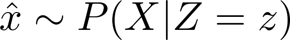
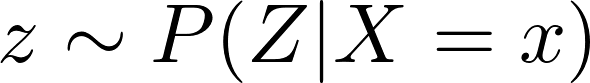
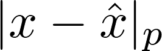

Augmenting High Dimensional Data with Deep Generative Models
Mårten Nilsson
Outline
- Generative Modelling
- Deep Generative Models
- Data Augmentation
- Experiments and Results
Generative Modelling
What is a generative model?
- A model capable of producing data similar to the data the model have been trained on
- Learns the distribution of the data (In contrast to discriminative models)
- Example: Naive Bayes, Gaussian Mixtures, Hidden Markov Models etc.
Why are generative models interesting?
- Generative modelling more complex than discriminative modelling
- Plenty of use cases
- Data compression
- Data augmentation
- Domain adaptation
It is difficult to construct generative models that scale
Deep Generative Models (DGMs)
Variational Autoencoders (VAEs)
- Consists of an encoder and a decoder
- These can be convolutional neural networks
- The encoder models
- The decoder models
- Model parameters are learned through variational inference
- Trained with two objectives
- should be similar to a prior
- When sampling , , the distance  should be minimal
Generative Adversarial Networks (GANs)
- Consists of a generator and discriminator
- These are often convolutional neural networks
- The discriminator is trained to distinguish fake data from real data
- The objective of the generator is to fool the discriminator
The other side of GANs
- Notoriously unstable
- Non-convergence
- Mode-collapse
- Lots of proposed variants (WGAN, Progressive GAN, ACGAN, LSGAN, BEGAN, DRAGAN, DCGAN etc.)
Data Augmentation
The question
"Can deep generative models be applied to generate synthetic data sets that can be used to boost the performance of existing discriminative models? "
In other words: Can we generate useful data?
Measuring usability of data
- Historically difficult to evaluate GANs (or other DGMs)
- Common measures are Inception Score and Fréchet Inception Distance
- Both of these are only valid on imagenet
- We need a custom evaluation measure
Evaluation by Classification
- Introduce a discriminative model (pupil localizer)
- Train this model on generated data and test on real data
=> Usable and interpretable measure of data quality
Wait, are we doing supervised learning now?
- Deep generative models are unsupervised
- But our evaluation is based on supervised learning
This can be solved by treating the annotations as part of the data

The constellation
GAN:

VAE:

Experiments and Results
Experiments
Models:
- WGAN
- VAE
- AEGAN
- (Progressive GAN)
Main experiments on Pupil Localization with real and synthetic data sets
Progressive GAN failed on this task
Results: Synthetic data
| WGAN | VAE | AEGAN | Original |
|---|
| 0.8132 | 0.159 | 0.148 | 0.09607 |
|---|
Results: Real world data
| WGAN | VAE | AEGAN | Original |
|---|
| 0.9966 | 0.3445 | 0.2084 | 0.11456 |
|---|
Results: Data augmentation on MNIST
| B100 | B200 | B400 | VAE | AEGAN |
|---|
| 0.90 | 1.02 | 0.87 | 1.33 | 0.86 |
|---|
Concluding remarks
Data augmentation using deep generative models is not feasible...